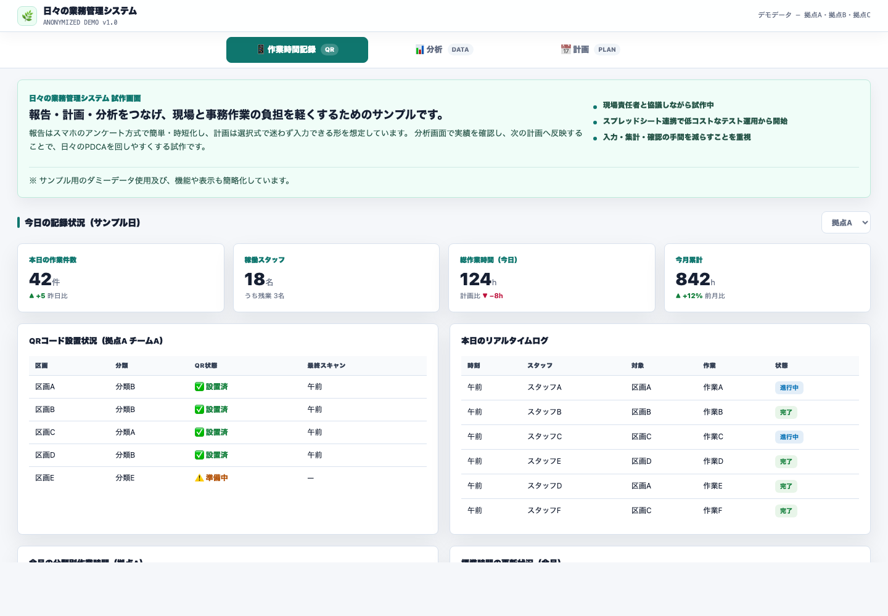

営業所事務
事務手順標準化サンプル
依頼受付、帳票確認、手順書、進捗管理をまとめた事務作業向けの画面です。
- 依頼内容を受付情報として整理
- 確認項目や入力欄は業務に合わせて変更可能
- 手順書や引き継ぎにも使える形を想定
整理例
- 1受付
- 2確認
- 3記録
- 4共有
- 5手順化
日々の業務管理、受発注、価格確認、営業支援、人員管理などの画面を、社名や数値を差し替えて簡素化しました。業務整理やデジタル活用の一例として見ていただけます。
各カードから個別画面を開けます。
事務手順標準化と日々の業務管理は、事務作業や現場報告の負担軽減を想定して作ったサンプルです。他の画面は、実務で作ったものを提出用に加工し、社名・場所名・数値などを差し替えています。
依頼受付、帳票確認、手順書、進捗管理をまとめた事務作業向けの画面です。
整理例

スマホ報告、選択式の計画、分析画面をつなぎ、日々のPDCAを回しやすくする試作画面です。

価格表や帳票の確認を、同じ画面で見られるようにした例です。


画面内の社名、場所名、氏名、価格、数値などは提出用に置き換えています。実顧客情報、実価格、現職の機密情報は含めていません。
最終判断や社外提出に関わる処理は、人による確認・承認を前提にしています。
入社後は、商品知識、帳票、社内システム、営業所ごとの実務を学びながら、無理のない改善に取り組みたいと考えています。